Семья
Добавьте телефоны близких в домашнюю сеть по коду на экране и уберите их, когда захотите. Владелец видит изменения.
Вся семья — в одной сети
Близкие, которых вы добавили, видят устройства дома и могут менять настройки сети. Владелец видит список телефонов и дату, когда каждый появился.


Пригласить своих — показать код рядом
Новый телефон показывает QR-код, а владелец сканирует его своим телефоном. Код действует пять минут, и для этого нужно быть рядом. Перед добавлением приложение ещё раз спросит, уверены ли вы.
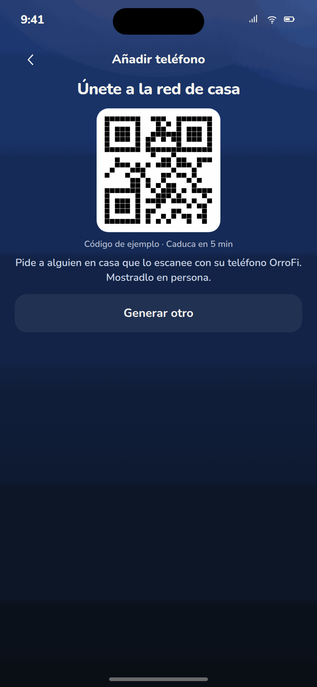
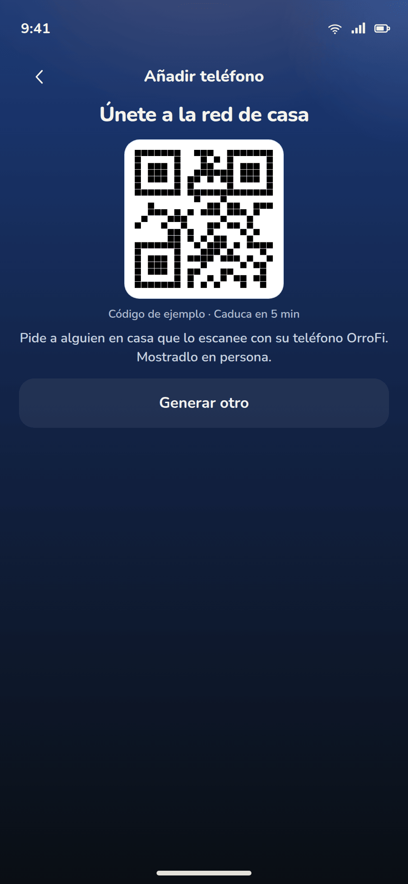
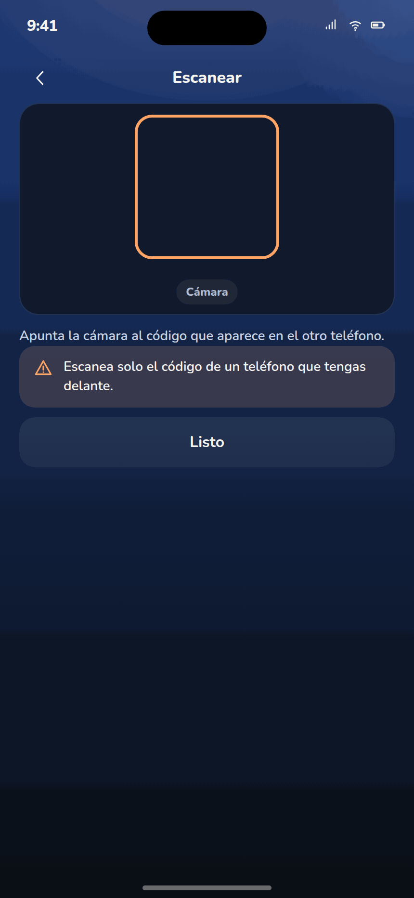
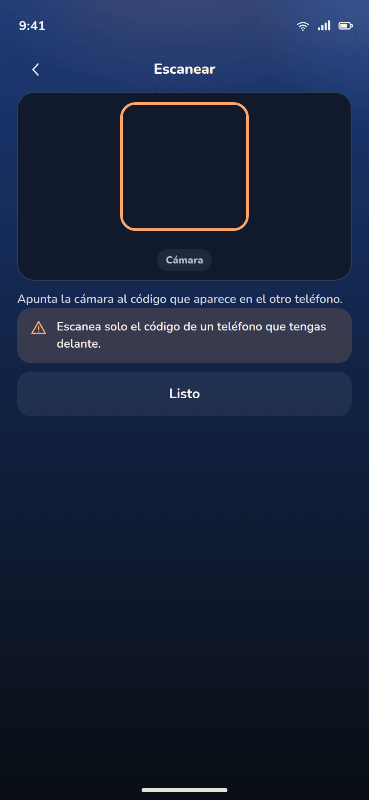
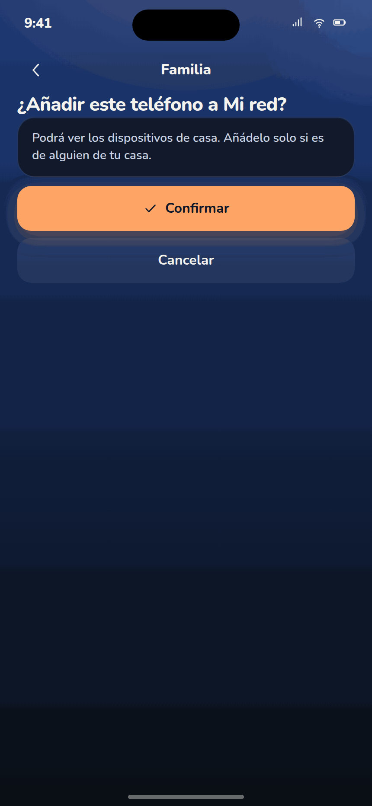
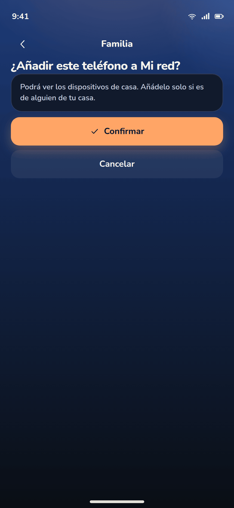
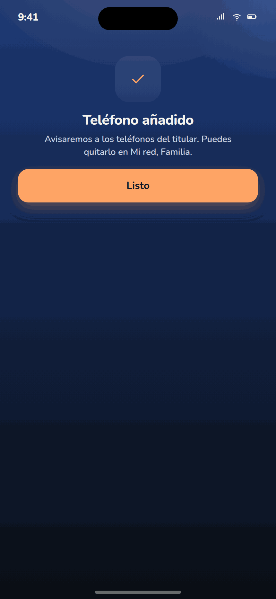
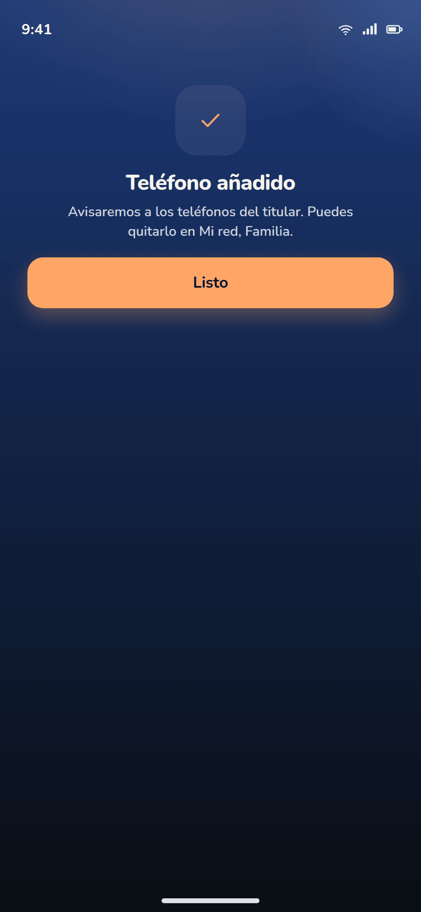
Далеко? Сверьте шесть цифр по видеосвязи
Если вы не рядом, созвонитесь и прочитайте друг другу шесть цифр с экранов. Совпали — нажмите «Совпадают». Попытка одна, и это сделано нарочно.
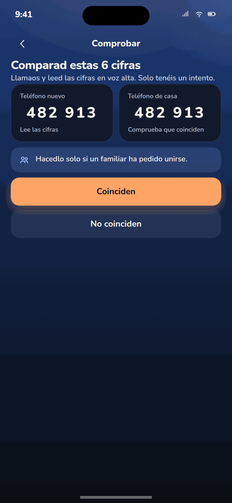
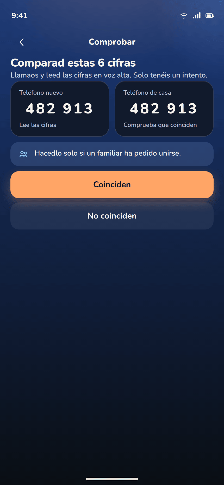
Код показывают при встрече
Если сделать снимок экрана или включить запись, приложение спрячет QR-код. Если цифры не совпали, приглашение отменяется и телефон не добавляется. Если вас просят переслать код или прочитать цифры, а вы не ждали приглашения, — не делайте этого.
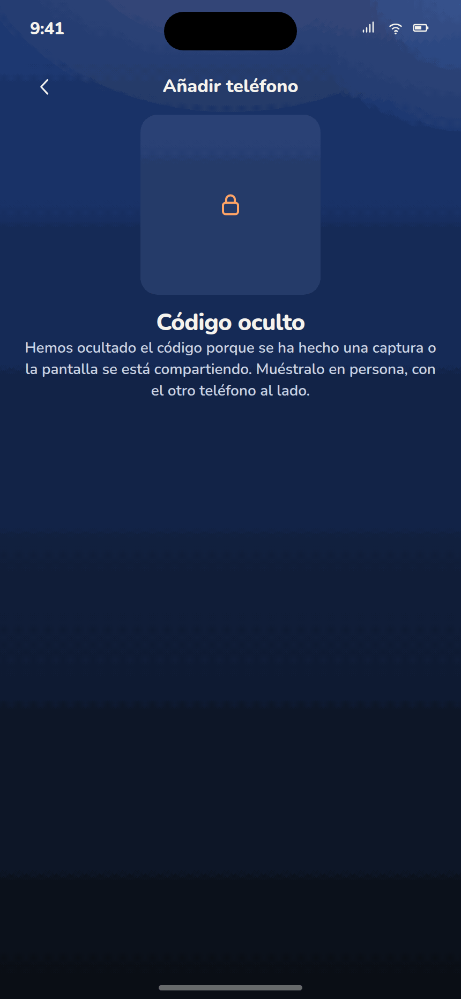
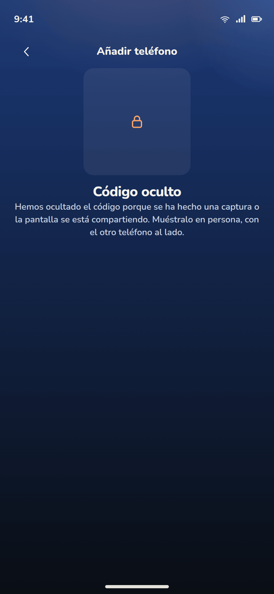
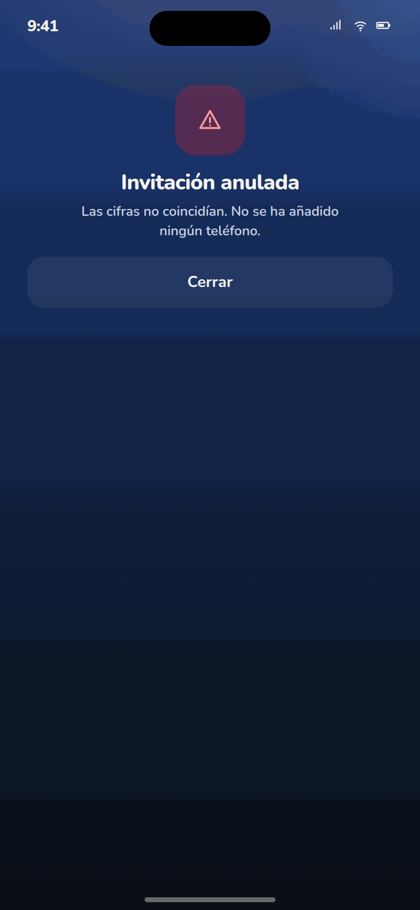
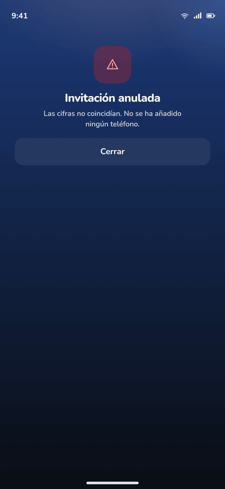
Потеряли телефон — уберите его из дома
Телефон убирается из Mi red в несколько касаний. После этого он не сможет войти в домашнюю сеть и не увидит новых данных. А когда кто-то добавляет телефон, владельцу приходит извещение с кнопкой «Убрать».
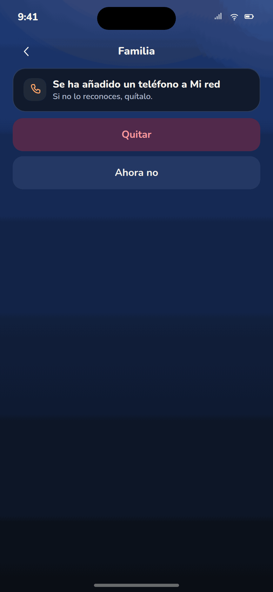
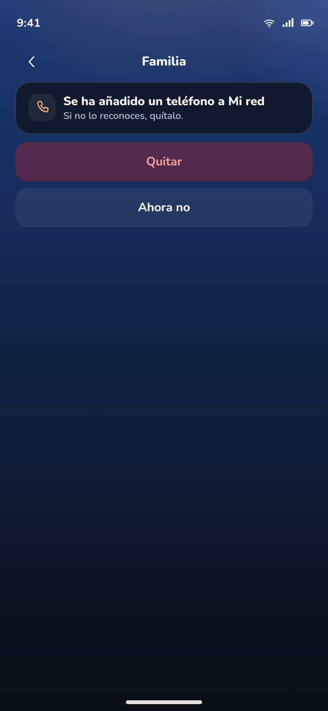
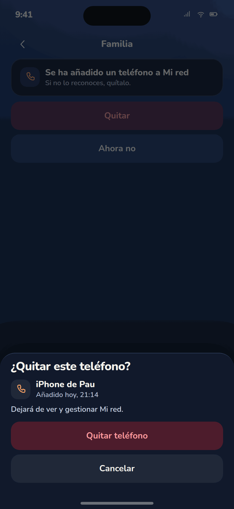
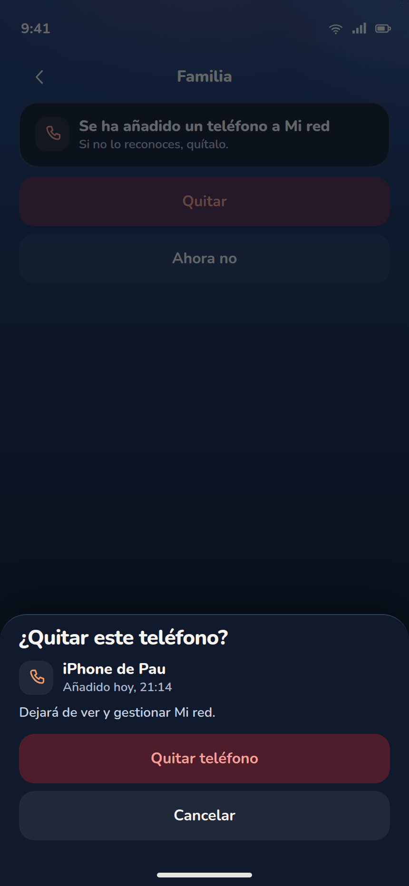
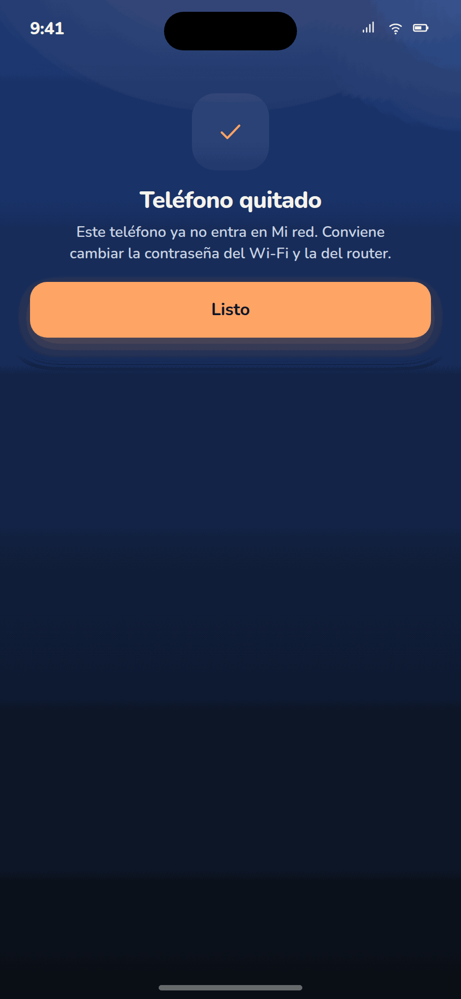
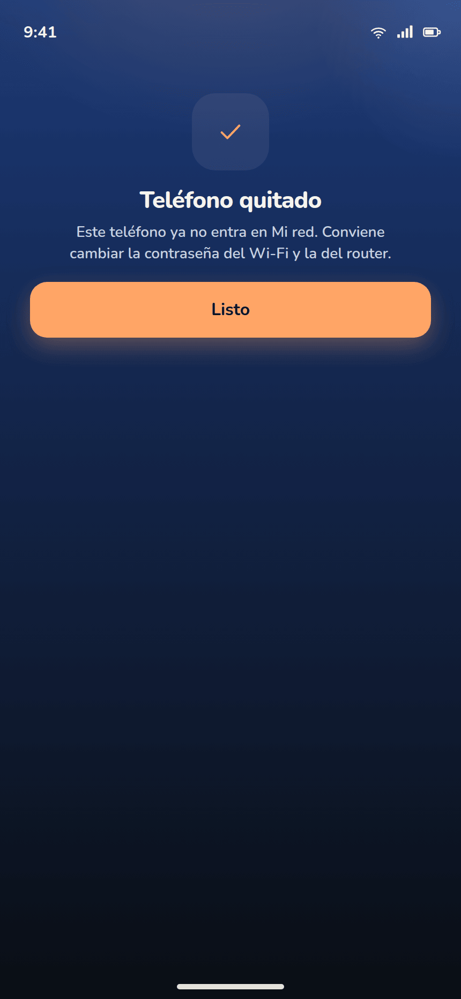